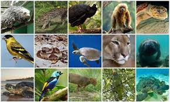

CACHORROS
.jpeg)
O cão (nome científico: Canis lupus familiaris),[1] no Brasil também chamado de cachorro, é um mamífero carnívoro da família dos canídeos, subespécie do lobo, e talvez o mais antigo animal domesticado pelo ser humano. Teorias postulam que surgiu do lobo cinzento no continente asiático há mais de 100 000 anos. Ao longo dos séculos, através da domesticação, o ser humano realizou uma seleção artificial dos cães por suas aptidões, características físicas ou tipos de comportamento. O resultado foi uma grande diversidade de raças caninas, as quais variam em pelagem e tamanho dentro de suas próprias raças, atualmente classificadas em diferentes grupos ou categorias. As designações vira-lata (no Brasil) ou rafeiro (em Portugal) são dadas aos cães sem raça definida ou mestiços descendentes.
“O gato (Felis silvestris catus), também conhecido como gato caseiro, gato urbano ou gato doméstico,[4] é um mamífero carnívoro da família dos felídeos, muito popular como animal de estimação. Ocupando o topo da cadeia alimentar, é predador natural de diversos animais, como roedores, pássaros, lagartixas e alguns insetos. Segundo pesquisas realizadas por instituições norte-americanas, os gatos consistem no segundo animal de estimação mais popular do mundo, estando numericamente atrás apenas dos peixes de aquário.[5][6]
GATOS

CAVALO
O cavalo (Equus ferus caballus) é uma das duas subespécies existentes de Equus ferus. É um mamífero perissodáctilo pertencente à família taxonômica Equidae. O cavalo evoluiu há entre 45 milhões a 55 milhões de anos, desde uma pequena criatura com vários dedos, o Eohippus, até o animal grande e com um único dedo de hoje. Os seres humanos começaram a domesticar cavalos por volta de 4000 a.C. e acredita-se que sua domesticação tenha sido disseminada em 3000 a.C. Os cavalos da subespécie caballus são domesticados, embora algumas populações domesticadas vivam na natureza como cavalos selvagens. Essas populações selvagens não são verdadeiros cavalos "selvagens", pois esse termo é usado para descrever cavalos que nunca foram domesticados, como o cavalo de Przewalski, uma espécie em perigo de extinção, uma subespécie separada e o único verdadeiro cavalo selvagem restante na natureza. Existe um vocabulário extenso e especializado usado para descrever conceitos relacionados a equinos, cobrindo de tudo, desde anatomia a estágios da vida, tamanho, cores, marcações, raças, locomoção e comportamento.
Os peixes são animais vertebrados, aquáticos, tipicamente ectotérmicos, que possuem o corpo fusiforme, os membros transformados em barbatanas ou nadadeiras (ausentes em alguns grupos) sustentadas por raios ósseos ou cartilaginosos, guelras ou brânquias com que respiram o oxigénio dissolvido na água (embora os dipnóicos usem pulmões) e, na sua maior parte, o corpo coberto de escamas.[1][2] Os peixes são recursos importantes, principalmente como alimento, mas também são capturados por pescadores recreativos, mantidos como animais de estimação, criados por aquaristas, e expostos em aquários públicos. Os peixes tiveram um papel importante na cultura através dos tempos, servindo como divindades, símbolos religiosos (ver ichthys), e como temas de arte, livros e filmes.[3]
PEIXE
ANIMAIS SILVESTRES
Os animais silvestres são aqueles animais que não estão acostumados com a presença dos seres humanos. Eles se diferem de animais como o cachorro, o gato e cavalo, pois não passaram pelo processo de domesticação. Assim, podem reagir de diferentes maneiras quando retirados da natureza, inclusive de maneira agressiva, uma vez que não estão acostumados com a presença humana. Os animais silvestres apresentam dificuldade em viver com os seres humanos, como cachorros e gatos convivem. São comuns casos em que animais silvestres não sejam capazes, por exemplo, de se reproduzir e de se alimentar em cativeiro.